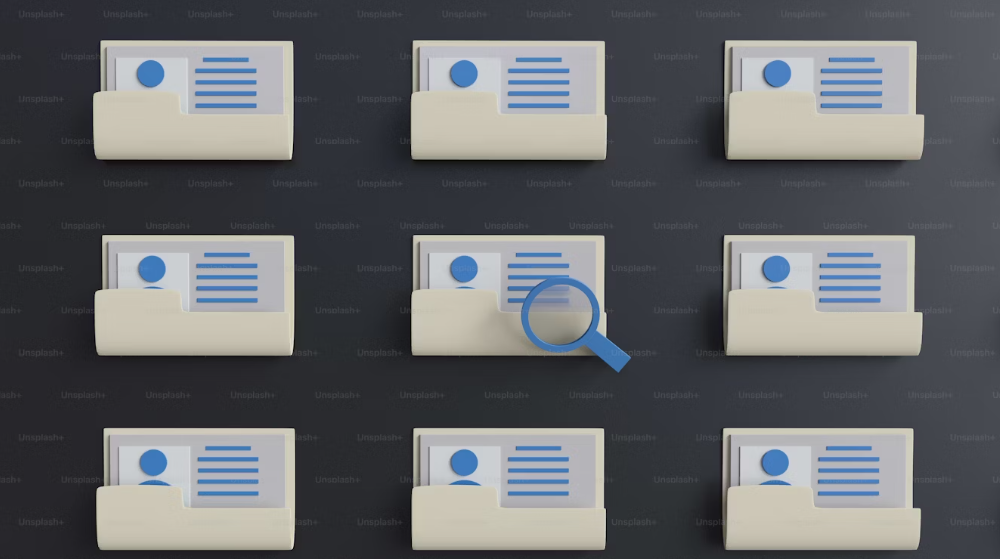

Bron: Unsplash
Digitale forensics na datalek
Na melding van een mogelijk datalek bij een kmo, werd ons team ingeschakeld om een digitale forensische analyse uit te voeren.
Samen met het interne IT-team onderzochten we de aard, omvang en oorsprong van het incident.
Doel
Feiten verzamelen en logbestanden analyseren om reconstructie van het incident mogelijk te maken.
Resultaat
- ✔️ Identificatie van exfiltratie via RDP
- ✔️ Beveiligingslek in VPN-config blootgelegd
- ✔️ Verslag bezorgd aan DPO en gerechtelijke instanties
Gebruikte tools
FTK Imager, Volatility, Sysinternals Suite, Zeek